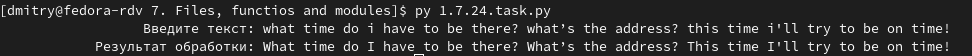

24. Озаглавим буквы.
Условие:
Многие в своих сообщениях не ставят заглавные буквы, особенно если используют для набора мобильные устройства. Создайте функцию, которая будет принимать на вход исходную строку и возвращать строку с восстановленными заглавными буквами. По существу, ваша функция должна:
- сделать заглавной первую букву в строке, не считая пробелы;
- сделать заглавной первую букву после точки, восклицательного или вопросительного знака, не считая пробелы;
- если текст на английском языке, сделать заглавными буквы «i», которым предшествует пробел и за которыми следует пробел, точка, восклицательный или вопросительный знак или апостроф.
Реализация такого рода автоматической корректуры исключит большую часть ошибок с регистром букв.
Пример:

Код:
def my_function_3(text_mod): # функция обрабатывает i
text_mod = list(text_mod)
count = 1
result = ""
temp = ""
for i in text_mod: # ВНИМАТЕЛЬНО!!! В этих условиях легко запутаться.
if (i == "i") and (len(text_mod) == count) and result[-1] == " ": # добавить в строку и изменить регистр, если в конце строки символ " i", а перед ней пробел
result += i.upper()
elif i == "i" and result[-1] != " ": # добавить в строку, если перед символом "i" нет пробела
result += i
elif i == "i" and result[-1] == " ": # запомнить, если " i", но пока недобавлять в строку
temp += i
elif (len(temp)) > 0 and (i == "\'" or i == " " or i == "." or i == "!" or i == "?"): # добавить в строку "I" + символ, если "i" требует модификации
result += (temp.upper() + i)
temp = ""
elif (len(temp)) > 0 and (i != "\'" or i != " "): # добавить в строку "i" + след.символ, если "i" не требует модификации
result += (temp + i)
temp = ""
elif i != "i": # добавить в строку, если символ не "i"
result += i
count += 1
return result
def my_function_2(text): # функция делает букву заглавной после ".", "!", "?" и следующего за ними пробела или пробелов
text_mod = "" # здесь будем собирать новую строку
mod = "" # временная переменная
count = 0
for i in text:
count += 1
if (i == "." or i == "!" or i == "?") and len(text) == count: # первым условием для проверки является ли знак последним символом в строке?
text_mod += i
elif i == "." or i == "!" or i == "?": # ищем точку в строке
mod += i
elif i == " " and bool(mod) is True: # ищем пробел после точки
mod += i
elif i != " " and bool(mod) is True: # ищем первый знак не пробел после точки с пробелом или пробелами
i = i.upper() # меняем регистр
text_mod += (mod + i)
mod = ""
elif bool(mod) is False:
text_mod += i
text_mod = my_function_3(text_mod)
return text_mod
def my_function(text): # функция делает первую букву заглавной
text = text.lstrip()
first_letter = text[0].upper()
text = my_function_2(first_letter + text.removeprefix(text[0]))
return text
text = input("%33s" % "Введите текст: ")
result = my_function(text)
print("%32s" % "Результат обработки:", result)